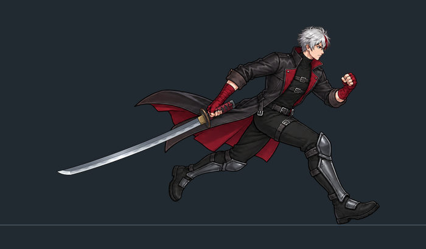
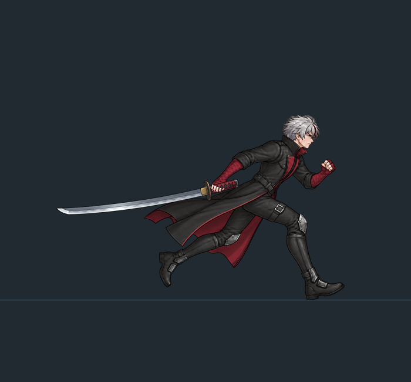
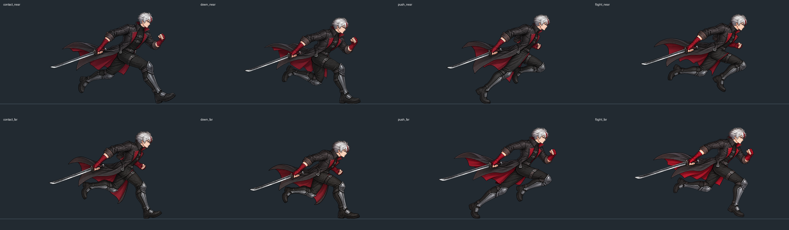
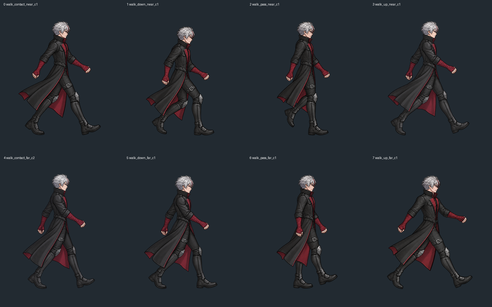

制作中，尚未实装。旧拆件步态已退回。本页身体均来自完整人物原画，没有腿件拼装、IK 或固定上身套腿。
已按最新反馈保留向后拖刀。新稿改为可见的拇指扣握和弯曲手指包柄，腕部随握柄方向转动。用户已认可这张的握持方向；完整跑步动作尚未完成，下方为继续制作的关键原画诊断。

三种武器共用完全相同的整身身体。红色缠布拇指与手指覆盖在独立刀柄上，刀口朝下；单张握持方向获认可，不等于完整动作和换武器实机验收。

C3 预览为 700×410 原生像素裁窗，角色以站高 380 像素标定，没有放大。源图实际约 1672×941，未达到整张源画布原生 2560×1440。
已补两侧着地、压缩、蹬伸与腾空。当前只回放真实原画，没有补间。已知问题：两侧下沉深度、腾空时伸腿时机不一致，反侧自由手臂轮廓仍需澄清。本段保留原画中的刀，仅用于姿势诊断，尚未完成全循环去刀分层、连续过渡与实装。

八张整身关键原画，默认半速。两侧承重下沉不一致、反侧过步伸腿偏早，仍需返修。64 帧补间在交叉腿和衣摆处出现透明重影，已内部退回，仅保留失败诊断。尚未完成持刀步行与起停。
